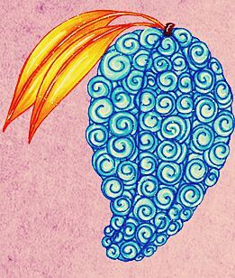

A Gomu Gomu no Mi é uma Akuma no Mi do tipo Paramecia que concede ao usuário as propriedades da borracha, transformando-o em um Homem de Borracha.
Mochi Mochi no Mi
A Mochi Mochi no Mi é uma Akuma no Mi especial do tipo Paramecia que permite ao usuário criar, controlar e se transformar em massa.
Bomu Bomu no Mi
A Bomu Bomu no Mi é uma Akuma no Mi do tipo Paramecia que permite ao usuário fazer qualquer parte de seu corpo explodir, seja cabelo, muco ou respiração, tornando o usuário um Bomba Humana.
Nikyu Nikyu no Mi
A Nikyu Nikyu no Mi é uma Akuma no Mi do tipo Paramecia que concede ao usuário a habilidade de repelir qualquer coisa que toque, este poder é utilizado através de patas na palma das mãos do usuário, tornando-o um Humano com Patas
Hana Hana no Mi
A Hana Hana no Mi é uma Akuma no Mi tipo Paramecia que permite ao usuário replicar e brotar pedaços de seu corpo a partir da superfície de qualquer objeto ou coisa viva.
Ope Ope no Mi
A Ope Ope no Mi é uma Akuma no Mi do tipo Paramecia que permite ao usuário criar um espaço esférico ou "sala", no qual o usuário tem total controle sobre os objetos dentro dele, tornando-o um Humano de Livre Modificação
Yomi Yomi no Mi
A Yomi Yomi no Mi é uma Akuma no Mi tipo Paramecia, que permite ao usuário voltar à vida depois de morrer.
Ito Ito no Mi
Ito Ito no Mi é uma Akuma no Mi do tipo Paramecia que permite ao seu usuário criar e manipular fios extremamente finos ao olho nú.
Kage Kage no Mi
A Kage Kage no Mi é uma Akuma No Mi de classe Paramecia que dá ao usuário a capacidade de manifestar e controlar sombras, como uma forma física tangível, tornando o usuário um governante das sombras
Gura Gura no Mi
A Gura Gura no Mi é uma Akuma no Mi do tipo Paramecia que permite ao usuário criar vibrações ou tremores, tornando-o um Humano Tremor
Logias
Goro Goro no Mi
A Goro Goro no Mi é uma Akuma no Mi do tipo Logia canônica que permite ao usuário criar, controlar e transformar-se em eletricidade à vontade, fazendo o usuário um Humano Relâmpago
Pika Pika no Mi
A Pika Pika no Mi é uma Akuma no Mi do tipo Logia que permite ao usuário criar, controlar e se transformar em luz à vontade, transformar o usuário em um Humano de Luz
Hie Hie no Mi
A Hie Hie no Mi é uma Akuma no Mi do tipo Logia que permite ao usuário criar, controlar e se transformar em gelo, tornando-o um Humano de gelo
Magu Magu no Mi
Magu no Mi é uma Akuma no Mi de classe Logia tipo mais forte que permite ao usuário se tornar, controlar e gerar magma, tornando-o um Humano de magma.
Suna Suna no Mi
A Suna Suna no Mi é uma Akuma no Mi do tipo Logia que permite ao usuário criar, controlar e se transformar em areia à vontade, podendo controlar os mais diversos tipos desta. Isto faz do usuário um Humano de Areia
Mera Mera no Mi
A Mera Mera no Mi é uma Akuma no Mi do tipo Logia que permite ao usuário criar, controlar e se transformar em chamas à vontade, tornando-o um Humano de Fogo.
Yami Yami no Mi
A Yami Yami no Mi é uma Akuma no Mi do tipo Logia que permite ao usuário criar e controlar as trevas à vontade, tornando-o um Homem-Trevas
Gasu Gasu no Mi
A Gasu Gasu no Mi é uma Akuma no Mi do tipo Logia que permite ao usuário criar, controlar e se transformar em gás à vontade, transformando o usuário em um Homem-Gás
Moku Moku no Mi
A Moku Moku no Mi é uma Akuma no Mi do tipo Logia que permite ao usuário criar, controlar e se transformar em fumaça à vontade, fazendo do usuário um Humano de Fumaça
Numa Numa no Mi
A Numa Numa no Mi é uma Akuma do tipo Logia que permite ao usuário tornar-se o elemento de "pântano" fazendo do usuário um Pântano Humano
Zoans
Tori Tori no Mi
 A Tori Tori no Mi, Modelo: Fenix, é uma Zoan Mítica que permite ao utilizador se transformar em uma fênix híbrida ou completa à vontade.
Hito Hito no Mi (Modelo Daibutsu)
A Hito Hito no Mi, Modelo: Daibutsu é uma Akuma no Mi do tipo Zoan Mítica que permite ao usuário se transformar em um Daibutsu (estátua do gigante Buda).
Hito Hito no Mi
A Hito Hito no Mi é uma Akuma no Mi do tipo Zoan que permite que seu usuário se transforme em um híbrido de humano e um ser humano integral à vontade.
Uo Uo no Mi
A Uo Uo no Mi, Modelo: Seiryu é uma Akuma no Mi do tipo Zoan Mítica que permite ao usuário se transformar em uma forma híbrida e completa de um Dragão Azul à vontade.
Hebi Hebi no Mi
A Hebi Hebi no Mi, Modelo: Yamata no Orochi é uma Akuma no Mi do tipo Zoan Mítica que permite ao usuário se transformar em uma versão híbrida e completa do Yamata no Orochi, um dragão serpentino de oito cabeças.
Inu Inu no Mi
A Inu Inu no Mi, Modelo: Okuchi no Makami é uma Akuma no Mi do tipo Zoan que permite ao usuário se transformar em uma forma híbrida e completa de uma divindade lobo
Neko Neko no Mi
Neko Neko no Mi, Modelo: Leopardo é uma Akuma no Mi do tipo Zoan Carnívora, que permite ao usuário transformar-se num Leopardo Hibrido, num Leopardo completo e faz o usuário ser o Homem Leopardo
Ushi Ushi no Mi
A Ushi Ushi no Mi, Modelo: Girafa é uma Akuma no Mi do tipo Zoan, que permite ao usuário transformar-se em um híbrido (metade girafa e metade humanoide) ou em uma girafa completa à vontade, fazendo o usuário um Humano Girafa
Sara Sara no Mi
A Sara Sara no Mi, Modelo: Axolote é uma Akuma no Mi do tipo Zoan que permite ao usuário se transformar em um híbrido com Axolote (um tipo de salamandra) ou se transformar completamente em um Axolotl.
Ushi Ushi no Mi
A Ushi Ushi no Mi, Modelo: Bisão é uma Akuma no Mi do tipo Zoan, que permite ao usuário transformar em um bisão híbrido e em um bisão completo à vontade